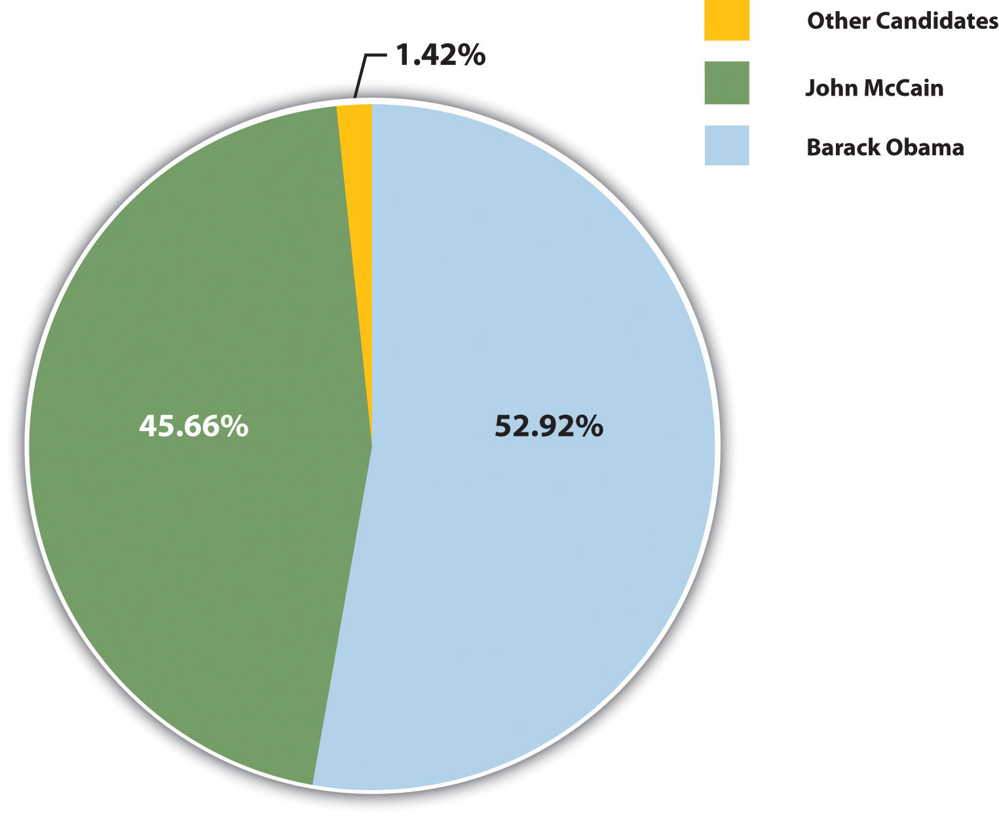
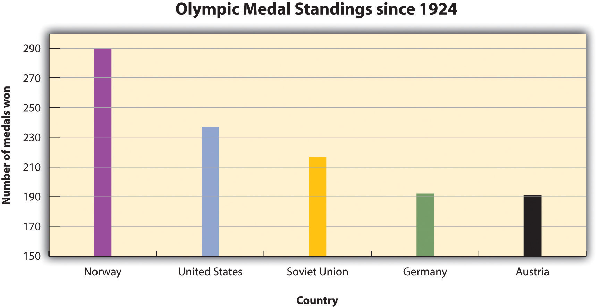
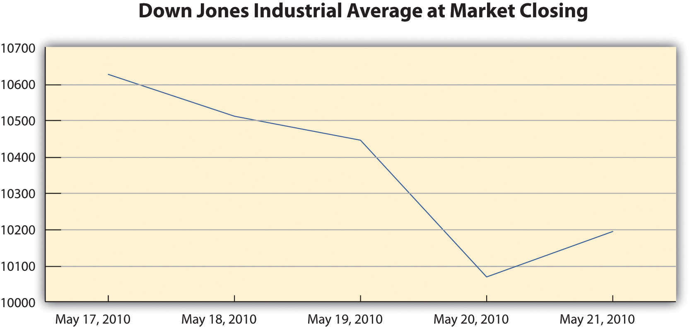
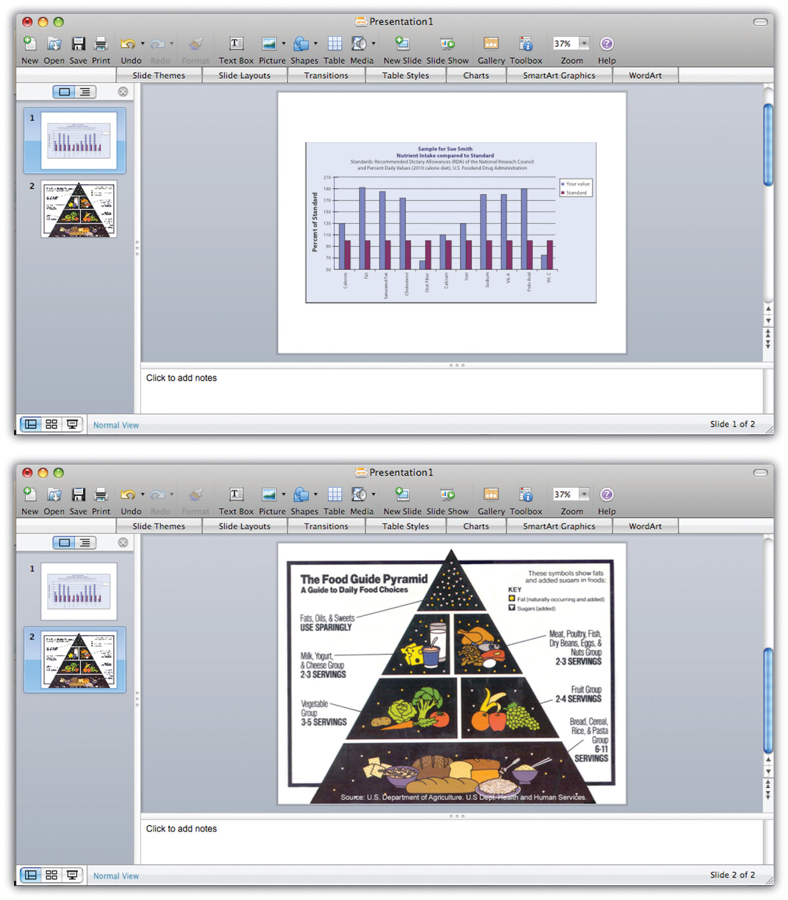

Good communication is a multisensory experience. Children first learning how to read often gravitate toward books with engaging pictures. As adults, we graduate to denser books without pictures, yet we still visualize ideas to help us understand the text. Advertisers favor visual media—television, magazines, and billboards—because they are the best way to hook an audience. Websites rely on color, graphics, icons, and a clear system of visual organization to engage Internet surfers.
Bringing visuals into a presentation adds color, literally and figuratively. There is an art to doing it well. This section covers how to use different kinds of visual aids effectively.
Good writers make conscious choices. They understand their purpose and audience. Every decision they make on the page, from organizing an essay to choosing a word with just the right connotations, is made with their purpose and audience in mind.
The same principle applies to visual communication. As a presenter, you choose the following:
Your goal is to use visual media to support and enhance your presentation. At the same time, you must make sure these media do not distract your audience or interfere with getting your point across. Your ideas, not your visuals, should be the focus.
As you develop the visual side of your presentation, you will follow a process much like the process you follow when you write. You will brainstorm ideas, form an organizational plan, develop drafts, and then refine and edit your work. The following sections provide guidelines to help you make good decisions throughout the process.
To help you get a sense of what makes visual media work, think about what does not work. Try to recall occasions when you have witnessed the following visual media failures:
In each case, the problem is that the media creator did not think carefully enough about the purpose and audience. The purpose of images, color, or flashing text on a website is to attract attention. Overusing these elements defeats the purpose because the viewer may become overwhelmed or distracted. Tables, charts, and graphs are intended to simplify complex information, but without clear labels and legible text, they will confuse the audience.
In contrast, effective visual elements are chosen or created with the purpose and audience in mind. Although a photo shoot for a magazine article might result in dozens of images, editors choose those few that work best with the article. Web designers and video game creators have an audience test their products before they are released, to ensure that people will understand how to use them. Understanding the function of different visual aids will help you use them with purpose.
Visual aids fall into two main categories—images and informational graphics. Images include photographs, illustrations and clip art, and video footage. Informational graphics include tables, charts, bar graphs, and line graphs.
These visual aids serve two purposes: to add emotional impact to your presentation and to organize information more clearly. With that in mind, read to find out how specific types of visual aids achieve those purposes.
A striking photograph can capture your audience’s attention far more successfully than words can. Consider including photographs at the beginning or end of your presentation to emphasize your main ideas or to accompany a particularly important point in the body of your presentation. Remember that, as with other types of graphics, less is often more. Two or three well-chosen photographs are more effective than a dozen mediocre ones.
When you choose photographs, ask yourself these questions:
To illustrate the sense of helplessness people felt in the midst of tragedy, a student could use a photograph that shows fear, weariness, or defeat on the face of the photograph’s subject.
Illustrations, such as editorial or political cartoons, serve much the same purpose as photographs. Because an illustration does not capture a moment in time the way a photo does, it may have less impact. However, depending on your topic and the effect you want to achieve, illustrations can still be very useful. Use the same criteria for choosing photographs to help you choose illustrations.
The style of an illustration or photograph affects viewers just as the content does. Keep this in mind if you are working with the stock images available in office software programs. Many of these images have a comical tone. This may be fine for some topics—for instance, a presentation on television shows for children. However, if you need to project a more serious tone, make sure you choose images to suit that purpose. Many free (or reasonably priced) image banks are available online.
Even more than photographs, video footage can create a sense of immediacy, especially if your video includes sound. Showing a brief video clip can help your audience feel as if they are present at an important event, connect with a person being interviewed, or better understand a process. Again, ask yourself the following questions to ensure you are using the footage well:
Informational graphics, such as tables, charts, and graphs, do not provoke the same response that images do. Nevertheless, these graphics can have a powerful impact. Their primary purpose is to organize and simplify information.
Tables are effective when you must classify information and organize it in categories. Tables are an especially good choice when you are presenting qualitative dataData or statistics that are not strictly numerical. that are not strictly numerical. Table 14.1 "Example of Qualitative Data Table" was created for a presentation discussing the subprime mortgage crisis. It presents information about people who have held powerful positions both in the government and at one of the investment banking firms involved in the subprime mortgage market.
Table 14.1 Example of Qualitative Data Table
| Name | Role(s) at Goldman Sachs | Years Active | Government Role(s) | Years Active |
|---|---|---|---|---|
| Henry Paulson | Chief operating officer | 1994–98 | US secretary of the treasury | 2006–9 |
| Chief executive officer | 1998–2006 | |||
| Robert Rubin | Vice chairman and co-chief operating officer | 1987–90 | Assistant to the president for economic policy and director, National Economic Council | 1993–95 |
| Co-chairman and co-senior partner | 1990–92 | US secretary of the treasury | 1995–99 | |
| Stephen Friedman | Co-chief operating officer | 1987–90 | Assistant to the president for economic policy and director, National Economic Council | 2002–5 |
| Co-chairman | 1990–92 | |||
| Chairman | 1992–94 |
Sources: http://www.rollingstone.com/politics/news/%3Bkw=%5B3351,11459%5D; http://www.nytimes.com/2008/10/19/business/19gold.html; http://topics.nytimes.com/top/reference/timestopics/people/p/henry_m_jr_paulson/index.html?inline=nyt-per; http://topics.nytimes.com/top/reference/timestopics/people/r/robert_e_rubin/index.html?inline=nyt-per, http://www.nytimes.com/2002/12/13/us/man-in-the-news-economic-adviser-from-other-side-of-the-deficit-stephen-friedman.html; http://news.bbc.co.uk/2/hi/business/342086.stm.
If you are working with numerical information, consider whether a pie chart, bar graph, or line graph might be an effective way to present the content. A table can help you organize numerical information, but it is not the most effective way to emphasize contrasting data or to show changes over time.
Pie charts are useful for showing numerical information in percentages. For example, you can use a pie chart to represent presidential election results by showing what percentage of voters voted for the Democratic presidential candidate, the Republican candidate, and candidates from other political parties.
Figure 14.5
Bar graphs work well when you want to show similarities and differences in numerical data. Horizontal or vertical bars help viewers compare data from different groups, different time periods, and so forth. For instance, the bar graph in Figure 14.6 allows the viewer to compare data on the five countries that have won the most Olympic medals since the modern games began in 1924: Norway, the United States, the former Soviet Union, Germany, and Austria. Bar graphs can effectively show trends or patterns in data as well.
Figure 14.6
Like bar graphs, line graphs show trends in data. Line graphs are usually used to show trends in data over time. For example, the line graph in Figure 14.7 shows changes in the Dow Jones Industrial Average—an economic index based on trading information about thirty large, US-based public companies. This graph shows where the Dow closed at the end of each business day over a period of five days.
Figure 14.7
In this exercise, you will begin to refine your ideas for incorporating media into your presentation. Complete the following steps on your own sheet of paper.
You will include original visual aids in your presentation to add interest, present complex information or data more clearly, or appeal to your audience’s emotions. You may wish to create some visual aids by hand—for instance, by mounting photographs on poster board for display. More likely, however, you will use computer-generated graphics.
Computer-generated visual aids are easy to create once you learn how to use certain office software. They also offer greater versatility. You can print hard copies and display them large or include them in a handout for your audience. Or, if you are working with presentation software, you can simply insert the graphics in your slides.
Regardless of how you proceed, keep the following guidelines in mind:
You can use standard office software to create simple graphics easily. The following guidelines describe how to work with word-processing software and presentation software.
Most personal computers come equipped with some basic image-editing software, and many people choose to purchase more advanced programs as well. You can upload photographs from a digital camera (or in some cases, a cell phone) or scan and upload printed photographs. The images can then be edited and incorporated into your presentation. Be sure to save all of your images in one folder for easy access.
To create a table within a word-processing document consult your software program’s help feature or an online tutorial. Once you have created the table, you can edit and make any additional changes. Be sure that the table has no more than six to seven rows or columns because you do not want to compromise the size of the text or the readability. Aligning with precision will help your table look less crowded. Also, the row and column titles should spell out their contents.
Figure 14.8
Pie charts and bar and line graphs can also be created using standard office software. Although you can create these graphics within a document, you will need to work with both your word-processing application and your spreadsheet application to do so. The graph should visually explain the data using colors, titles, and labels. The use of color will help the audience distinguish information; however, avoid colors that are hard on the eyes, such as lime green or hot pink. The title should clearly state what the graph explains. Lastly, avoid using acronyms in the titles and other labels.
If you plan to work only with hard copy graphics during your presentation, you may choose to create them as word-processing documents. However, if you are using presentation software, you will need to choose one of the following options:
Standard office presentation software allows you to create informational graphics in much the same way you would create them within a word-processing application. Keep the formatting palette, a menu option that allows you to customize the graphic, open while you use the software. The formatting menu provides options for inserting other types of graphics, such as pictures and video. You may insert pictures from an image bank available within the program, or insert images or video from your own desktop files. Shape your use of multimedia in accordance with the message your presentation is trying to convey, the purpose, and your audience.
Most of the time, using computer-generated graphics is more efficient than creating them by hand. Using office software programs helps give your graphics a polished appearance while also teaching you skills that are useful in a variety of jobs. However, it may make sense to use hand-created visual aids in some cases—for instance, when showing a 3-D model would be effective. If you follow this route, be sure to devote extra time to making sure your visual aids are neat, legible, and professional.
Flip charts are inexpensive and quick visual aids used during face-to-face presentations. The flip chart can be prepared before, as well as during, the presentation. Each sheet of paper should contain one theme, idea, or sketch and must be penned in large letters to be seen by audience members farthest away from the speaker.
Any media you incorporate should include a caption or other explanatory text. A captionA brief (one to two sentences) description or explanation of a visual image. is a brief, one- to two-sentence description or explanation of a visual image. Make sure your captions are clear, accurate, and to the point. Use full sentences when you write them.
Captions should always be used with photographs, and in some cases, they can be useful for clarifying informational graphics, which represent qualitative data visually. However, informational graphics may not require a caption if the title and labels are sufficiently clear. For other visual media, such as video footage, providing explanatory text before or after the footage will suffice. The important thing is to make sure you always include some explanation of the media.
In this exercise, you will begin to develop visual aids for your presentation. Complete the steps in this exercise—and enjoy the chance to be creative. Working with visuals can be a pleasant way to take a break from the demands of writing.
Collaboration
Please share the first version of your visual aids with a classmate. Examine what they have produced. On a separate piece of paper, note both the elements that catch your attention and those that would benefit from clarification. Return and compare notes.
Regardless of how you create your visual aids, be sure to test-drive them before you deliver your presentation. Edit and proofread them, and if possible, show them to someone who can give you objective feedback. Use the following checklist.
Visual Aid Evaluation Checklist
Office software includes many options for personalizing a presentation. For instance, you can choose or create a theme and color scheme, modify how one slide transitions to the next, or even include sound effects. With so many options, students and employees sometimes get carried away. The result can seem amateurish and detract from, rather than enhance, your presentation.
Remember, you are delivering a presentation, not producing a movie. Use the customization options to help give your presentations a consistent, polished, appearance. However, do not let these special effects detract from the substance of your slides.
Depending on your topic, you may be able to find images and other graphics you can use instead of creating your own. For instance, you might use photographs from a reputable news source or informational graphics created by a government agency. If you plan to use visual aids created by others, keep the following guidelines in mind:
You will probably find it most efficient to use the Internet to search for visual aids. Many students begin by typing keywords into a search engine to locate related images. However, this search technique is not necessarily efficient, for several reasons:
A more efficient strategy is to identify a few sources that are likely to have what you are looking for, and then search within those sites. For instance, if you need a table showing average life expectancy in different countries, you might begin with the website of the World Health Organization. If you hope to find images related to current events, news publications are an obvious choice. The Library of Congress website includes many media related to American history, culture, and politics.
Searching this way has the following advantages:
If you do choose to use a search engine to help you locate visual media, make sure you use it wisely. Begin with a clear idea of what you are looking for. Use the advanced search settings to narrow your search. When you locate a relevant image, do not download it immediately. Read the page or site to make sure you understand the image in context. Finally, read the site’s copyright or terms of use policy—usually found at the bottom of the home page—to make sure you may use the material.
If you are unable to find what you are looking for on the Internet consider using print sources of visual media. You may choose to mount these for display or scan them and incorporate the files into an electronic presentation. (Scanning printed pages may lower the quality of the image. However, if you are skilled at using photo-editing software, you may be able to improve the quality of the scanned image.)
If you are working with images, audio, or video footage available online, you may wish to insert a link within your presentation. Then, during your presentation, you can simply click the link to open the website in a separate window and toggle between windows to return to your presentation slides.
To insert a hyperlink within your presentation, click on insert in the toolbar and then select hyperlink from the menu. Doing so will open a dialogue box where you can paste your link and modify the accompanying display text shown on your slide.
Before you download (or scan) any visual media, make sure you have the right to use it. Most websites state their copyright and terms of use policy on their home page. In general, you may not use other people’s visual media for any commercial purpose without contacting the copyright holder to obtain permission and pay any specified fees.
Copyright restrictions are somewhat more ambiguous when you wish to download visual media for educational uses. Some educational uses of copyrighted materials are generally considered fair useA legitimate use of brief quotations from source material to support and develop a writer’s ideas. This includes the use of other copyrighted media, even though the user has not formally requested the copyright holder’s permission to reproduce the media. Many educational uses of visual media are generally considered fair use as long as the user scrupulously follows certain guidelines.—meaning that it is legally and ethically acceptable to use the material in your work. However, do not assume that because you are using the media for an educational purpose, you are automatically in the clear. Make sure your work meets the guidelines in the following checklist. If it does, you can be reasonably confident that it would be considered fair use in a court of law and always give credit to the source.
Media Fair Use Checklist
By following these guidelines, you are respecting the copyright holder’s right to control the distribution of the work and to profit from it.
In some fields, such as teaching, job applicants often submit a professional portfolio to a prospective employer. Recent college graduates may include relevant course work in their portfolios or in applications to graduate school. What should you do if your course work uses copyrighted visual media?
This use of media is acceptable according to fair use guidelines. Even though you are using the work for your personal professional advancement, it is not considered an infringement on copyright as long as you follow the additional guidelines listed in the previous checklist.
As you conduct your research, make sure you document sources as you proceed. Follow the guidelines when you download images, video, or other media from the Internet or capture media from other sources. Keep track of where you accessed the media and where you can find additional information about it. You may also provide a references page at the end of the presentation to cite not only media and images but also the information in the text of your presentation. See Chapter 13 "APA and MLA Documentation and Formatting" for more information on creating a reference page.
Write captions or other explanatory text for visual media created by others, just as you would for media you created. Doing so helps keep your audience informed. It also helps ensure that you are following fair use guidelines by presenting the media with your commentary, interpretation, or analysis. In your caption or elsewhere in your presentation, note the source of any media you did not create yourself. You do not need to provide a full bibliographical citation, but do give credit where it is due.
In this exercise, you will locate visual aids created by others and continue developing the work you began earlier. Complete these steps.
Take some time now to review how you will integrate the visual and verbal components of your presentation.